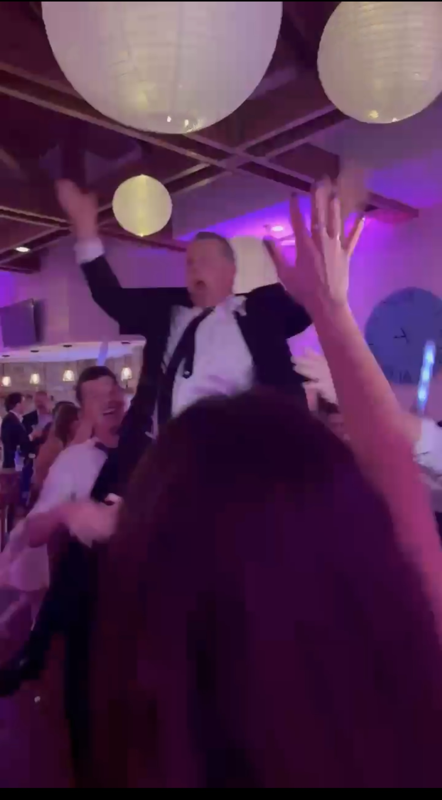
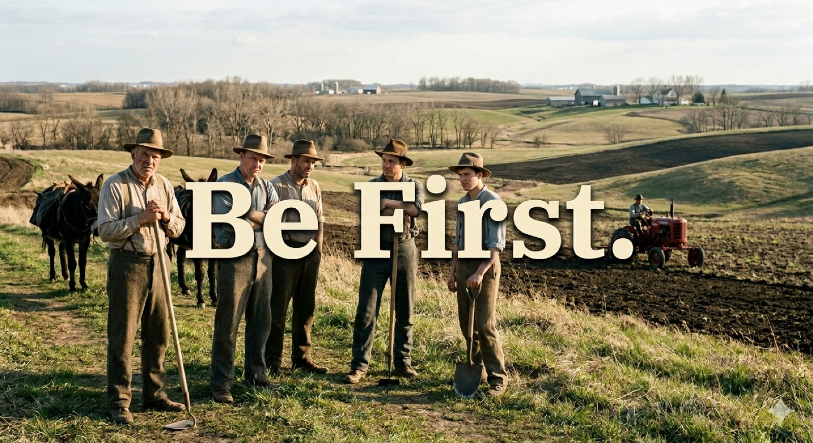
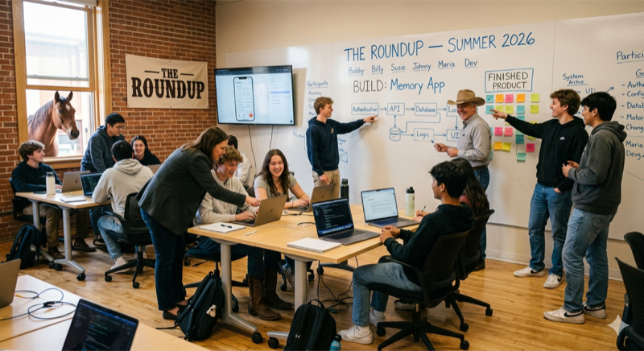
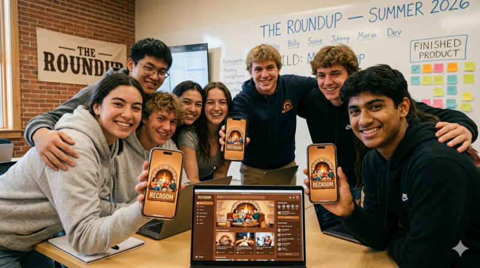
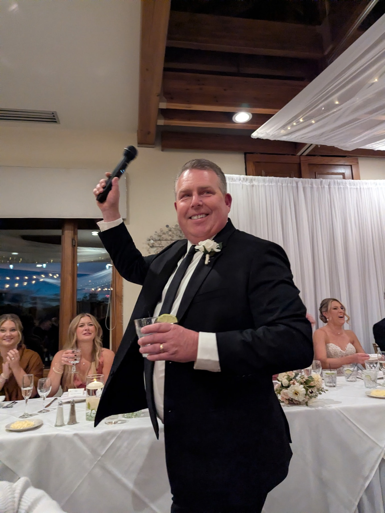
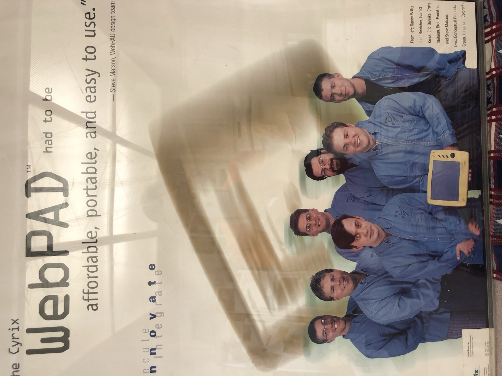
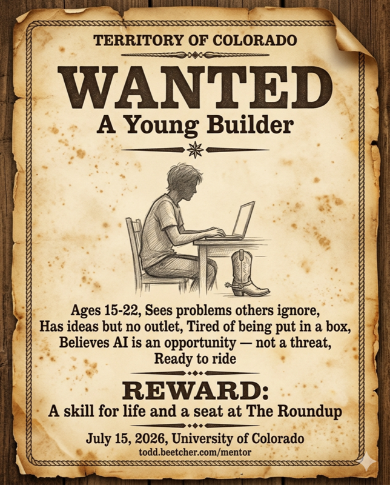

Curious what skill it takes to thrive as one of the newest members of the AI generation.
System-level thinking is the most important skill you can develop to thrive with AI.
Let's build together.
That’s me. Thirty seconds after the father-of-the-bride speech at my first daughter’s wedding — being hoisted up by her husband’s groomsmen.
Not a pose. That’s what it looks like when your kid chooses exactly the right person — and you know it.
→ Read my origin story
I’ve watched every new wave in technology terrify the people who didn’t lean into it first. It was never a threat. It was always a gift — to the ones who moved toward it.
But AI is different. This is the biggest leap in human productivity in two hundred years. If you embrace it, you can build a life nobody in your position has ever been able to build before.
And that friction you feel? That’s the signal. That’s where your opportunity lives.
I’ve spent my career finding that gap and putting the right technology into it. I want to help you find yours.
I’m not here to explain AI. I’m here to help you go native in it.
That’s what this is.
— Todd
The moment we're in

Every generation has its moment — when something new arrives and people split into two camps: those who fear it, and those who move toward it.
That moment is happening right now.
AI doesn’t diminish what a person can do. It amplifies it.
That’s not a threat to who you are. That’s a gift. And it’s exactly what we’re here to help you pick up.
A few questions. Answer honestly.
If any of these hit home — keep reading.
JOIN the next Roundup.
A live, in-room experience where you go from idea to working prototype 🥾⛺ — for high school and college students ready to think at the system level and build with AI.

A collaborative experience where young builders and mentors come together to develop the most valuable skill of your generation — system-level thinking🤠.
You'll work alongside peers and mentors to identify real friction, architect real solutions, and build real artifacts together. You walk out with something you made.
And a skill that will define your value in a world where AI is everywhere, all the time — propelling you ahead of your peers and positioning you to become the mentor to the next one through the door.
Around here, we call that the cowboy spirit. ⭐
This isn't a coding class.
It isn't an entrepreneurship class.
It isn't an engineering class.
It's about learning to coexist with the most powerful productivity tool ever handed to a generation — before everyone else figures out they have to.
Not knowing Python isn't a weakness. It's a gift.
You don't need to speak a programming language anymore. You need to think at the system level. That's the skill that transfers everywhere — whether you're building a company, designing a product, fixing a problem in your community, or figuring out your place in a world that's moving fast.
AI is here. It's everywhere. It's only growing. The ones who embrace it first won't just survive the change. They'll define it.
The Roundup is building cowboys. 🤠 The best ones were never loners — they were systems thinkers who showed up for their community. That's what we're building here: cowboys and cowgirls who are AI-ready and show up.
Don't be this cowboy.
Project-based. Experiential. Collaborative.
You'll come into a room with other people who have ideas and ambition but don't know where to start.
Together you'll identify real friction — problems you actually see in the world.
You'll learn to think about the ecosystem around that problem.
You'll architect a real solution.
You'll build a real prototype — together, as a team.
This is system-level thinking from the very first moment to the last.
No silos. No solo coding. No theory without practice.
At the end, you'll have something real. Something you built. Something you can show anyone.

Working together, these cowboys and cowgirls used their system-level thinking to build something real.
This is what The Roundup produces. ⭐
The ability to see a problem and know what to do with it.
Experience going from friction to prototype — start to finish.
The confidence of a system-level thinker.
Something you built with your own hands and your own mind.
"From problem to product. That's the new résumé."

My name is Todd Beetcher. I married my high school sweetheart in 1984. We're going on a date tonight.
We raised two daughters.
→ Read my origin storyBoth were state champions. Both earned Division I full-ride athletic scholarships. Both became doctors — one in physical therapy, one in law. Both were team captains — in high school and in college. Both are in healthy, committed relationships.
One is moving to Michigan. She asked us to come live near her.
The other is 26, billing a dizzying number of hours every month — and still shows up for Sunday dinners.
I'm not telling you this to brag. I'm telling you this because if you're going to trust someone to stand at the front of a room with your kid — or if you're a kid deciding whose room to walk into — you deserve to know who's standing there.
I have spent my career in business development, sales, and building — in rooms where ideas become products. I've been part of building things before the world knew it needed them. I know how to walk people from the beginning of something all the way to the end. That's what I do. That's what I've always done.
My kids are my pride — not because of what I built, but because of what I raised.
🏄♂️ If you're wondering who to thank for that iPad in your pocket — you're welcome.

There's nothing wrong with the cowboy.
He was the original get-shit-done contributor. Not for himself — for his family, his community, the people who counted on him to show up. That was the cowboy spirit. And it still is.
The world built highways around him. Not because he failed. Because he stopped picking up new tools.
AI is the next tool. And it's not coming — it's here. Everywhere. All the time. Growing.
The cowboys and cowgirls who thrive in this moment won't be the ones who learned to write Python. They'll be the ones who learned to think at the system level — who can look at a problem, understand the whole ecosystem around it, and build something real from that.
That's the new cowboy skill. That's what nobody is teaching.
We're not here to make you an engineer. We're not here to make you an entrepreneur. We're here to give you the confidence and the identity to pick up the most powerful tool ever handed to a generation — and use it to contribute. To your community. To your family. To the world you're about to help build.
You can still be a cowboy. But you have to pick up the new tools.
Don't tend your fire alone.
A Shared Moment of Growth — todd.beetcher.com/mentor
